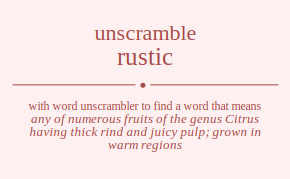

The word found after unscrambling rustic means that any of numerous fruits of the genus Citrus having thick rind and juicy pulp; grown in warm regions, any of numerous tropical usually thorny evergreen trees of the genus Citrus having leathery evergreen leaves and widely cultivated for their juicy edible fruits having leathery aromatic rinds, .
